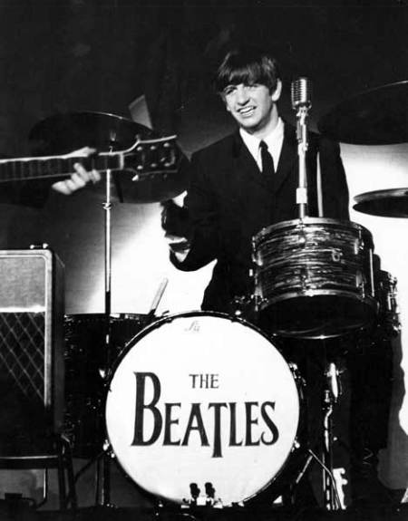

Friday, May the 28th, 2010
back to: title, date or indexes
It has long been my conviction that newspapers in this age o' pap ‘n’ barbarism are written and edited by numbskulls, dimwits, airheads and know-noughts. The sort of people who think “prima donna” is spelled, and means, “pre-Madonna” and who are indeed wholly ignorant of almost everything that happened before about 1985.
Here is a picture of Ringo Starr. I need not explain to Hooting Yard readers who he is.

Ringo was visiting the Chelsea Flower Show this week. A snap appeared in the Telegraph. The caption? “Ringo Starr, the narrator of Thomas the Tank Engine, with his wife Barbara Bach at the Chelsea Flower Show 2010.” [My italics.]
Cruel it may be, but one is tempted to force these nitwits to listen to “Octopus's Garden” over and over and over again, until the cows come home.